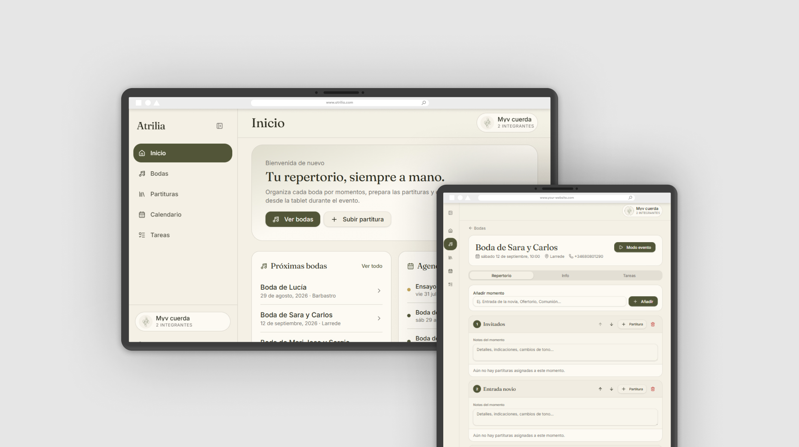
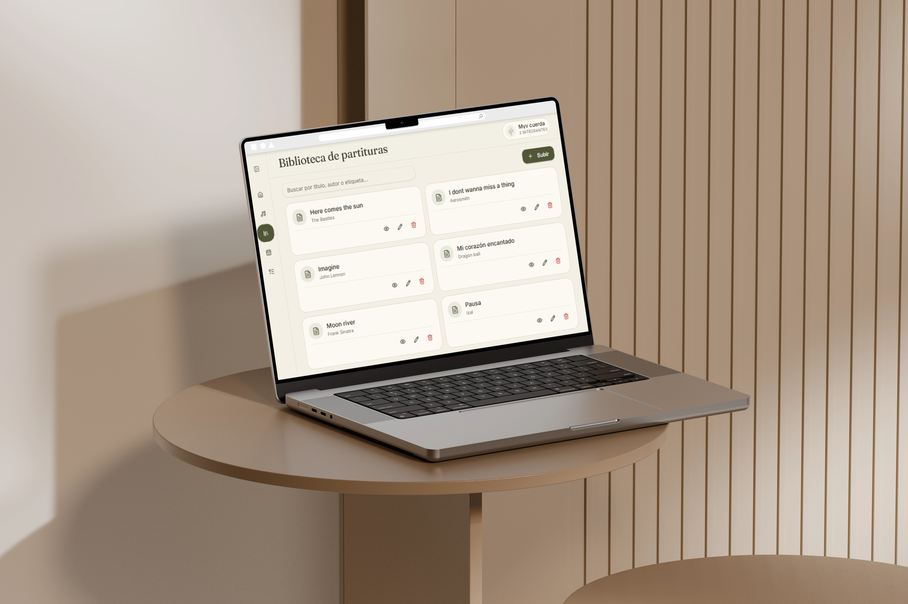
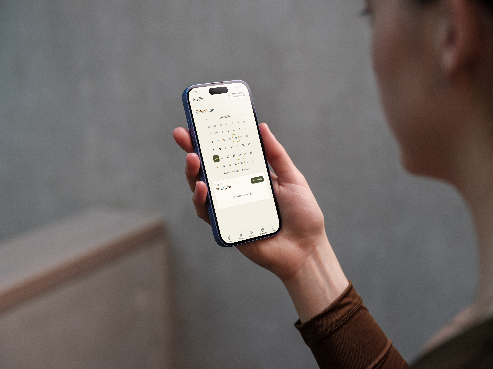
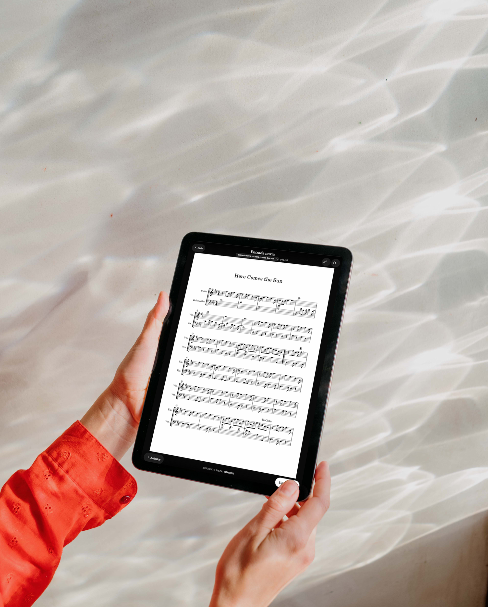

UX/UI Project
Atrilia
A digital music stand: organizes sheet music, weddings, and calendar in one place, replacing paper on stage.

Project goals
- ○Replace paper sheet music with a digital system usable live, from a tablet.
- ○Centralize each wedding: repertoire, event details, and pending tasks in one place.
- ○Allow annotating sheet music digitally, just as you would by hand on paper.
- ○Share a common calendar with blocked days, rehearsals, and events.
- ○Maintain visual consistency with the identity already created for the myv duo.
The challenge: replacing the music stand without losing the spontaneity of playing live
Every wedding follows the same ritual: selecting sheet music, printing it, sorting it, carrying it to the venue, and finding it quickly mid-performance. Any last-minute change means reprinting or writing notes by hand on paper.
On top of that comes the management side: coordinating the date, contact, venue, and pending tasks for each wedding between the two of us, with no shared place to check it. The starting point was designing a system that solved both problems at once, without adding friction on stage.
As fast as turning a physical page, but with all the organization behind it.
The design process
As a member of the duo myself, I knew the friction points firsthand: misplaced sheet music, notes lost between weddings, coordination over WhatsApp. That first-hand knowledge shaped the design priorities from the very start.
I defined the information architecture around the real workflow: Home, Weddings (with repertoire, info, and tasks per event), Sheet Music as a searchable global library, and shared Calendar and Tasks.
The screen that mattered most was the one used live: event mode, designed for tablet, with clear sheet music reading and touch annotations that replace pencil on paper, without distracting from playing.
I named and designed Atrilia's visual identity as an extension of the myv duo's brand system. With the design and component system finalized, I built the functional product with Lovable, keeping control over every experience and interface decision.
Visual consistency with the MyV brand
Atrilia inherits the palette, typography, and tone of the branding already created for the duo. It's not a generic tool — it's a digital extension of MyV's own identity.


A digital music stand we already use at every wedding.
Atrilia replaces paper on stage and centralizes the duo's entire organization: repertoire, wedding details, shared calendar, and tasks, with an event mode designed for playing seamlessly from the tablet.

Next project